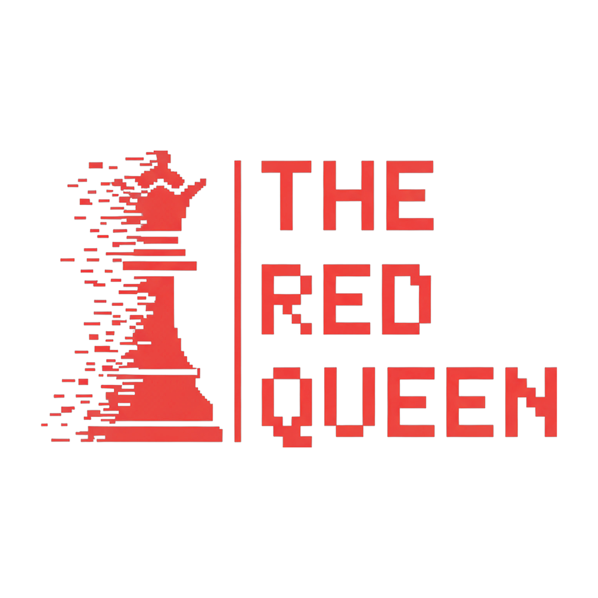

THE RED QUEENTRADING CON MÉTODO
Intraday Trading Program
Contenido del programa · 6 sesiones 1:1 · 60 minutos · Lunes · Miércoles · Viernes
Contenido del programa
Smart Money Concepts · Gestión de riesgo · Psicotrading
Día 1Fundamentos y marco SMC
- Revisión del modelo actual
- TradingView · Timeframes · Buys/Sells · Velas japonesas
- Puntos de retorno · Liquidaciones · Imbalances
- Cambio de estado (CISD) · Cambio de estructura (MSS)
- Noticias e impacto
Día 2Modelos Market Maker y fractales
- PO3 y AMD (Acumulación · Manipulación · Distribución)
- ERL-IRL · Pares de tiempo
- Impulsos, zonas de premio y descuento
Día 3Estrategias según horario
- Contexto y bias diario · Targets (DOL) · Áreas de interés
- Teoría de rangos
- Perfil por sesión
Día 4Manejo de riesgo
- Matemática y probabilidades
- Administración de stop loss (Breakeven · Trailing)
- Consistencia y pérdida máxima
Día 5Psicotrading
- Cibernética · Proceso vs resultados (P&L)
- Journaling & review · Overtrading · Undertrading
- Ejercicios mentales · Cognitive load · Backtesting
Día 6Q&A y extensión de conocimiento
- Preguntas y asesoría personalizada
- Vela mensual / semanal · Mercados (Forex · Futures · Metales)
- Futuros vs CFDs · Propfirm landscape
¿Cómo son las sesiones 1:1? Calls privadas de coaching con guía directa y personalizada. Llega con tus trades recientes, preguntas específicas y las áreas donde estés batallando. Cada sesión incluye revisión de trades, análisis de tu toma de decisiones, gestión de riesgo y guía para mejorar tu disciplina.
Checklist Lo que debes preparar
TradingView
Ten TradingView instalado y con tu cuenta creada, preferiblemente en un computador (escritorio o portátil). Aunque existen versiones para tabletas y teléfonos, no son recomendadas para tomar el curso: el análisis de estructura y los multi-timeframe se trabajan mucho mejor en pantalla grande.
Dónde tomar apuntes
Prepara un sistema de apuntes que funcione para ti: un cuaderno físico, notas en tu computador (Notion, Obsidian, OneNote) o un documento digital. Lo importante es que puedas escribir rápido durante la sesión y revisar después. Te recomendamos dedicar una sección por tema: marco SMC, modelos, estrategias, riesgo y psicología.
Trades recientes para revisar
Lleva tus últimos trades (capturas, historial o journal) para revisarlos juntos en sesión. La mentoría es mucho más útil cuando trabajamos sobre tus operaciones reales y no solo sobre teoría.
Preguntas específicas
Anota antes de cada sesión las dudas o áreas donde estés batallando. Llegar con preguntas concretas hace que cada minuto de la sesión rinda al máximo.
Conexión y entorno
Usa una conexión a internet estable y un lugar tranquilo con audífonos, para aprovechar al 100% la sesión 1:1 sin interrupciones.
THE RED QUEENTRADING CON MÉTODO
Nos vemos en la primera sesión. Prepara tu setup, trae tus preguntas y empecemos a leer el mercado como los creadores de mercado.